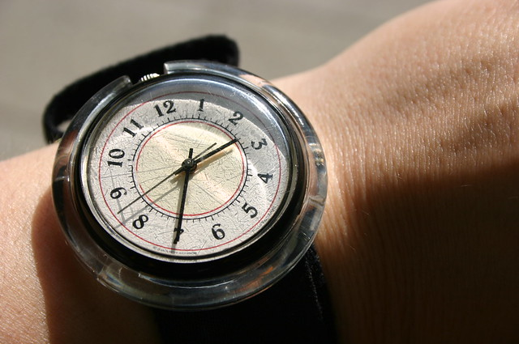

clock
名詞・動詞/klɑk/CEFR A1頻度#930
- 【名詞】時計。時刻を表示する装置（a device that shows what time it is）
- 【名詞】ゲーム内時刻。マインクラフトのサーバー時間など、システムの進行時間（the progression of time in a game）
- 【動詞】時間を計る。速度や所要時間を測定する（to measure or record the time or speed of）
⛏️ マインクラフト例文
⛏I'll clock our mining speed to see if it gets faster.
採掘速度を計測して、速くなったか確認する。
/aɪl ˈklɑk ˌaʊər ˈmaɪnɪŋ ˈspiːd tə ˈsiː ɪf ɪt ˈɡɛts ˈfæstər/
- 機能語 to が弱形 /tə/ に弱化し see に連なる [tə ˈsiː] タ シー
- it gets の /t/ が未開放で /ɡ/ に続く [ɪt̚ ˈɡɛts] イッ ゲッツ
アイル クラック アワー マイニング スピード タ シー イフ イッ ゲッツ ファスター
⛏The server clock shows it's past midnight in the game.
サーバーの時刻表示がゲーム内でもう夜中だと示している。
/ðə ˈsɝvər ˈklɑk ˈʃoʊz ɪts ˈpæst ˈmɪdnaɪt ɪn ðə ˈɡeɪm/
- 弱形 the（server前）が /ðə/ に弱化 [ðə ˈsɝvər] ザ サーヴァー
- 弱形 the（game前）が /ðə/ に弱化 [ɪn ðə ˈɡeɪm] イン ザ ゲイム
ザ サーヴァー クラック ショウズ イッツ パースト ミッドナイト イン ザ ゲイム
⛏Can you clock how long it takes to finish mining?
採掘を終わらせるのにどのくらい時間がかかるか計測できますか？
/kæn ju ˈklɑk ˌhaʊ ˈlɔŋ ɪt ˈteɪks tə ˈfɪnɪʃ ˈmaɪnɪŋ/
- can が弱形 /kən/ に弱化し you に続く [kən ju] カン ユー
- it takes の /t/ が未開放で次の /t/ に続く [ɪt̚ ˈteɪks] イッ テイクス
- 機能語 to が弱形 /tə/ に弱化 [tə ˈfɪnɪʃ] タ フィニッシュ
カン ユー クラック ハウ ロング イッ テイクス タ フィニッシュ マイニング
🔤 活用形・複数形
💬 よく使う熟語（マイクラ例文）
around the clock昼夜を問わず、24時間体制で
⛏We're mining around the clock to get enough diamonds for the new base.
新しい基地用に十分なダイヤを集めるため、24時間休まず採掘している。
/wiːr ˈmaɪnɪŋ əˈraʊnd ðə ˈklɑk tə ɡɛt ɪˈnʌf ˈdaɪməndz fər ðə ˈnuː ˈbeɪs/
- 弱形 the（clock前）が /ðə/ に弱化 [ðə ˈklɑk] ザ クラック
- 機能語 to が弱形 /tə/ に弱化 [tə ɡɛt] タ ゲット
- 弱形 the（base前）が /ðə/ に弱化 [ðə ˈnuː] ザ ニュー
ウィア マイニング アラウンド ザ クラック タ ゲット イナフ ダイモンズ フォー ザ ニュー ベース
beat the clock期限に間に合わせる、時間内に完成させる
⛏We need to beat the clock and finish the house before night falls.
夜が来る前に家を完成させなければならない。
/wiː ˈniːd tə ˈbiːt ðə ˈklɑk ənd ˈfɪnɪʃ ðə ˈhaʊs bɪˈfɔːr ˈnaɪt ˈfɔːlz/
- 機能語 to が弱形 /tə/ に弱化 [tə ˈbiːt] タ ビート
- 弱形 the（clock前）が /ðə/ に弱化 [ðə ˈklɑk] ザ クラック
- 弱形 the（house前）が /ðə/ に弱化 [ðə ˈhaʊs] ザ ハウス
ウィー ニード タ ビート ザ クラック アンド フィニッシュ ザ ハウス ビフォー ナイト フォールズ
watch the clock時間を気にする、時間に注意する
⛏I'm watching the clock because the server resets at midnight.
サーバーが夜中にリセットされるので、時刻をずっと気にしている。
/aɪm ˈwɑːtʃɪŋ ðə ˈklɑk bɪˈkɔːz ðə ˈsɝvər rɪˈsɛts æt ˈmɪdnaɪt/
- 弱形 the（clock前）が /ðə/ に弱化 [ðə ˈklɑk] ザ クラック
- 弱形 the（server前）が /ðə/ に弱化 [ðə ˈsɝvər] ザ サーヴァー
アイム ウォッチング ザ クラック ビコーズ ザ サーヴァー リセッツ アット ミッドナイト